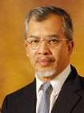
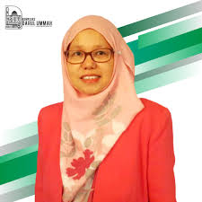
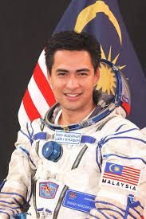

1. Tan Sri Prof Dr Mohd Kamal Hassan

Prof. Emeritus Tan Sri Dr. Mohd. Kamal bin Hassan (born 27 October 1942 in Pasir Mas, Kelantan) is a Muslim academic and Islamic scholar, specializing in contemporary Islamic thought, particularly pertaining to the Southeast Asia region. He was the Rector of the International Islamic University Malaysia (IIUM) from 1998 to 2006.
2. Professor Dr Nor Zuraida Binti Zainal

Professor Dr Nor Zuraida Zainal is a Consultant Psychiatrist in the University Malaya Medical Centre, Kuala Lumpur. She heads the Liaison-Psychiatry Division in the Department of Psychological Medicine since year 2000. She had an experience from a short clinical attachment with Psychooncology team in Leicester General Hospital and Christie Cancer Hospital in Manchester, UK.
3. Dato' Dr. Sheikh Muszaphar Shukor Al Masrie bin Sheikh Mustapha

Sheikh Muszaphar was born in Kuala Lumpur, the son of Ustaz Muhaidin. He is of Arab and Malay descent. He attended high school at Maktab Rendah Sains MARA in Muar. He then earned a Bachelor of Medicine and Surgery degree from Kasturba Medical College, an affiliated college of Manipal University, in Manipal, India. Sheikh Muszaphar is an orthopaedic surgeon at the Universiti Kebangsaan Malaysia.